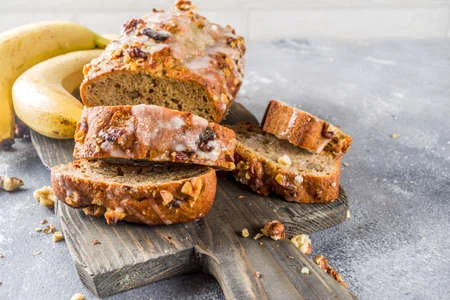

Banana Bread

| Ingredients | Amount |
|---|---|
| Flour | 2 cup |
| Sugar | 3/4 cup |
| Baking Soda | 3/4 tsp |
| Salt | 1/2 tsp |
| Bananas | 3 (ripe) |
| Butter | 6 tbs |
| Eggs | 2 (large) |
| Plain Yogurt | 1/4 cup |
| Vanilla | 1 tsp |
Instructions
- Heat oven to 350 degrees
- Grease a 9 by 5 loaf pan
- Whisk together flour, sugar, baking soda, and salt in a large bowl
- In a seperate bowl, whisk together mashed bananas, melted butter, eggs, yogurt, and vanilla
- Fold banana mixture into the flour mixture until just combined, do not overmix.
- Scrape batter into pan and smooth top
- Bake for 55 minutes
- Let loaf cool in pan for 10 minutes and then on wire rack for 1 hour
-
Variations
Chocolate
Reduce sugar by 2 tbs and mix a heaping 1/2 cup grated bittersweet chocolate into the dry ingredientsCoconut Macadamia Nut
Spread 1 cup chopped macadamia nuts and 1/2 cup sweetended coconut flakes on a baking sheet and toast until golden brown (stir every 2 minutes). Fold into the batter before putting in pan.Organe Spice
Add 2 tbs grated orange zest, 1 tsp cinnamon, and 1/4 tsp nutmeg to dry ingredients.